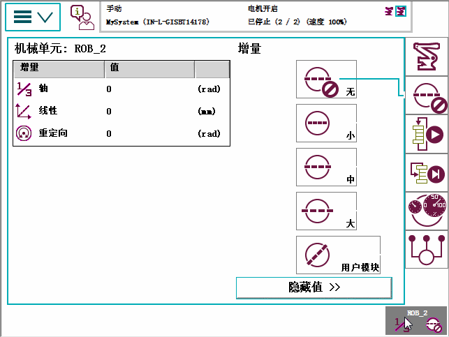

“微动控制”窗口中也有增量设置，详情请参阅增量移动，精确定位。

无 | 没有增量 |
Small（小） | 小移动 |
Medium（中） | 中等移动 |
Large（大） | 大移动 |
User（用户） | 用户定义的移动 |
显示/隐藏值 | 显示/隐藏增量值 |
角度单位 | 定义角度的单位。 |
 | 注意 仅在手动模式下“增量”菜单才可用。 |
| 浏览和处理 FlexPendant - 快速设置 | ||
| Quickset（快速设置）菜单，Increment（增量） | ||
| 增量设置 | “微动控制”窗口中也有增量设置，详情请参阅增量移动，精确定位。 | ||||||||||||||||
| Increment（增量）图示 | 
|